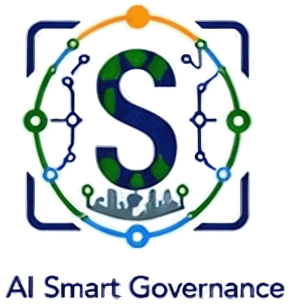

Potholes & road damage
Finds potholes and road obstructions with severity and location, often before a citizen complains.
Department: Engineering
CCTV कॅमेऱ्यांपासून Civic Intelligence पर्यंत
AI Smart Ward adds an AI layer to existing municipal CCTV. It spots potholes, water leaks, fallen trees, garbage dumping and accidents as they happen, routes each one to the right department, and tracks it until it is closed.
Municipal departments still learn about most civic problems through complaints and phone calls, often hours or days later. The footage was there all along. No one was looking at that camera at that moment.
CCTV can see everything, but no person can watch every camera every moment.
AI Smart Ward moves the city from reacting to complaints to acting before them.The value of AI is not in the alert; it is in the action taken on it. Every step is recorded, so accountability and transparency are built in.
Video from cameras the city already owns
Every frame scanned, round the clock
Type, place, time and snapshot captured
Priority assigned automatically
Routed to the team that owns it
Team acts and uploads proof
Verified, closed and reported
No new cameras required. AI Smart Ward is a software layer over existing CCTV infrastructure, getting more value from investments the city has already made.
Each detection is mapped to the department responsible for acting on it.
Finds potholes and road obstructions with severity and location, often before a citizen complains.
Flags pipeline leaks and water-logged roads early, cutting water loss and inconvenience.
High-priority alerts for fallen or dangerous trees, vital during the monsoon and emergencies.
Detects garbage build-up and unauthorised dumping at vulnerable spots.
Fast detection of accidents, congestion and abnormal traffic events for quicker response.
Loitering, restricted-area movement, unusual activity and crowd anomalies.
Senior officials see open incidents, response times and department performance in real time, turning CCTV into data-driven governance.
Illustrative dashboard with sample data. Live dashboards are configured for each pilot.
No city-wide commitment upfront. The corporation decides at every stage, based on measured results.
Deploy on selected cameras in chosen wards or locations.
Measure detection accuracy and the response workflow with officials.
Add use cases and locations, department by department.
Scale across the corporation once value is proven.
Ward-level monitoring of roads, water, sanitation, trees and traffic, connected to department workflows.
AI video analytics for transport, public safety and facility monitoring under smart-governance programmes.
Safety monitoring for colleges, schools and health facilities: restricted areas, after-hours movement and crowding.
Facial recognition is optional and controlled, enabled only where applicable law, policy and the competent authority permit it. Our focus is civic events, not profiling citizens.

An AI and computer vision company from Navi Mumbai, focused on smart governance, intelligent surveillance and digital transformation. We help cities and institutions get more value from the camera infrastructure they already own.
No. AI Smart Ward works on the CCTV cameras you already have. It adds an AI analytics layer and an incident-management dashboard on top of existing video feeds.
Yes. It is designed to complement existing systems, focusing on civic use cases such as roads, water, sanitation and trees. Integration details are agreed during pilot scoping.
We select a small set of cameras and use cases with your team, run the system on those feeds, and review detection accuracy and response workflow together. You decide on expansion only after seeing the results.
The system focuses on civic events, not individuals. Facial recognition is off by default and is enabled only where law, policy and the competent authority permit it.
Deployment and CCTV integration are delivered with VC Tech, our technology deployment partner, while Swami Intelligent Systems manages the AI solution and the project.
We run a pilot demonstration on selected CCTV cameras so your team can judge the results first-hand, before any larger decision.